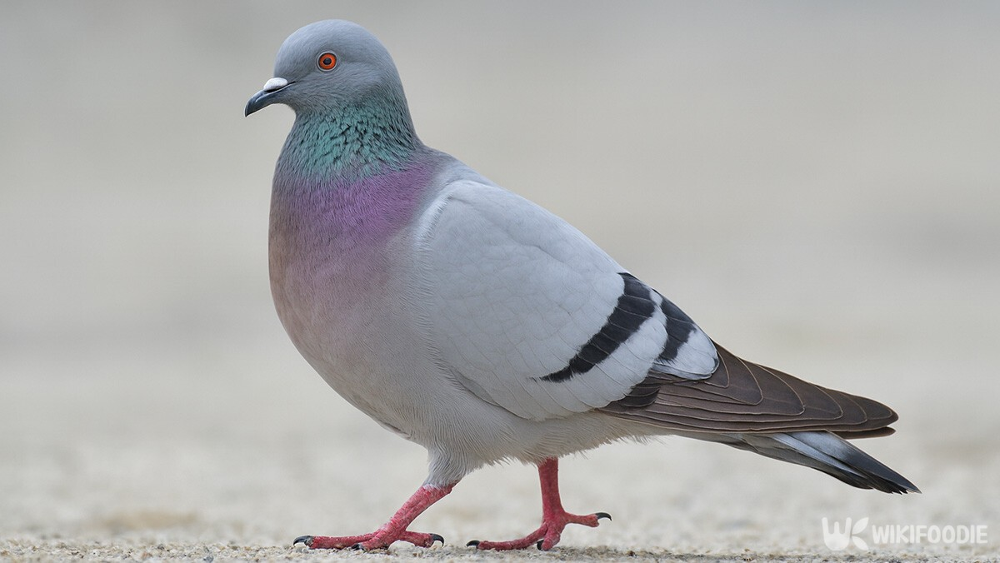

Pigeon is the common name for birds of the family Columbidae. This family includes about 308 species of birds, including doves and pigeons. The word "pigeon" is used somewhat interchangeably with "dove", but the former denotes a group of generally larger birds while the latter is reserved for smaller species. However, there is no consistent distinction between these two terms, and some people use them interchangeably.
비둘기는 비둘기과를 이루는 308종의 새들의 총칭이다. 흔히 "비둘기"라고 부르는
도시 비둘기는 바위비둘기의 아종인 집비둘기이다. 바위비둘기의 품종 개량으로
공작비둘기, 흰비둘기 등의 품종이 있다.
새끼의 입을 벌려 토해낸 먹이를 먹이는 것으로 새끼를 기른다. 어디에서나
흔히 볼 수 있는 텃새이며, 서양에서 흰비둘기는 평화를 상징한다.
Columbidae is a bird family consisting of doves and pigeons. It is the only family in the order Columbiformes.[a] These are stout-bodied birds with small heads, relatively short necks and slender bills that in some species feature fleshy ceres. They feed largely on plant matter, feeding on seeds (granivory), fruit (frugivory), and foliage (folivory).
2개다.
이것도 2개다.
